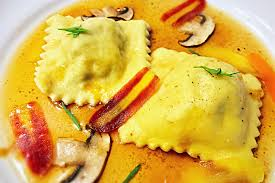

Receta de Raviolis

Descripcion de la receta
Los raviolis son pequeñas pastas rellenas, típicamente cuadradas u ovaladas, que se cocinan y sirven con una variedad de salsas. Pueden estar rellenos de carne, queso, espinacas o una combinación de estos ingredientes. Su textura suave y relleno sabroso los convierte en una opción popular en la cocina italiana, tanto como plato principal o como parte de un menú variado.
Historia de los raviolis
Los raviolis tienen una historia que se remonta a la época medieval en Italia, donde se mencionaban por primera vez en textos gastronómicos. A lo largo de los siglos, los raviolis han evolucionado y se han adaptado a diferentes regiones de Italia, cada una desarrollando sus propias variantes de relleno y salsa. Hoy en día, los raviolis son una parte importante de la cocina italiana tradicional y se disfrutan en todo el mundo por su sabor único y versatilidad culinaria.
Lista de ingredientes
- Pasta para ravioli (casera o comprada)
- Relleno para ravioli: carne, queso ricotta, espinacas, nuez moscada, sal y pimienta
- Salsa de tomate o salsa de mantequilla y salvia
- Queso parmesano rallado (opcional)
- Aceite de oliva
- Sal y pimienta al gusto
Pasos para realizar un rico plato de raviolis
- Preparar la masa para ravioli según las instrucciones o usar masa comprada.
- Preparar el relleno mezclando carne cocida o queso ricotta con espinacas cocidas y condimentar con nuez moscada, sal y pimienta al gusto.
- Extender la masa de ravioli en una superficie enharinada y colocar cucharaditas del relleno en el centro de cada porción de masa.
- Doblar la masa sobre el relleno y sellar los bordes con los dedos o un tenedor.
- Cocinar los raviolis en agua hirviendo con sal durante unos 3-4 minutos o hasta que floten en la superficie.
- Escurrir bien los raviolis y servirlos calientes con salsa de tomate o salsa de mantequilla y salvia.
- Opcionalmente, espolvorear con queso parmesano rallado antes de servir.